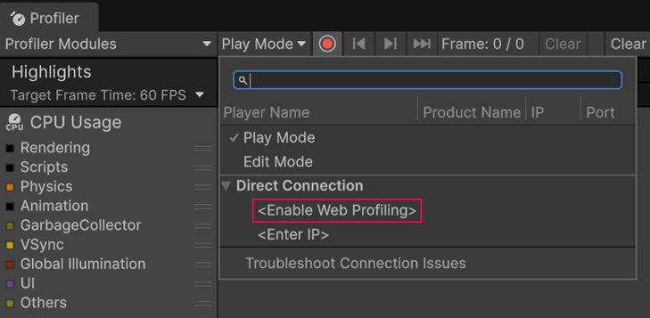
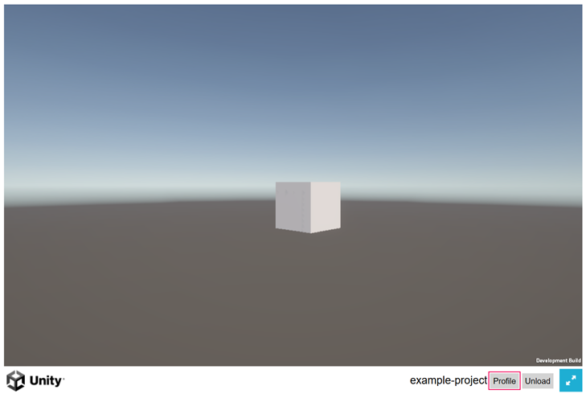

Record performance data for Web builds using the Unity Profiler.
To connect a Web build to the Unity Profiler, you can use the temporary local server created during the Build and Run process or manually connect to a device using its IP address. Both methods require a Profile button in the application. This button is included in the Default and PWA Web templates, but you must add it to all other templates.
Notes:
To profile on a different platform, refer to Collect performance data on a target platform.
Note: The Default and PWA Web templates include a Profile button by default. For all other templates, you must Add the Profile button to your template before following these steps.
To profile your Web build on a Unity temporary local server:
Tip: To collect profiling data when the browser window is inactive, in Player Settings (menu: Edit > Project Settings > Player), enable Run In Background.
Note: The Default and PWA Web templates include a Profile button by default. For all other templates, you must Add the Profile button to your template before following these steps.
To profile your Web build on a custom server or another device:
Open the Profiler window (menu: Window > Analysis > Profiler).
Select Play Mode > Enable Web Profiling.

A window opens showing that web profiling is active. Copy the IP address and port from the window.
Run your build. In the running build, select Profile.

A window opens requesting the connection information. Paste in the IP address and port.
To disconnect, in the running build, select Stop Profiling.
View real-time performance data in the Profiler window.
If your build is running on the same device as the Unity Editor, you can enable the Autoconnect Profiler option in the Build ProfilesA set of customizable configuration settings to use when creating a build for your target platform. More info
See in Glossary window to collect startup data automatically. To use Autoconnect Profiler on another device, you must manually add the IP address in the player arguments of your build.
To configure another device to use Autoconnect Profiler:
Open the index.html file of your build.
Find the following line:
var config = {
arguments: []
// ...
}
Modify it to include the IP address and port you copied from the Profiler window, where xxxxxx is the IP address and port:
var config = {
arguments: ["--player-connection-ip=xxxxxx"],
// ...
}
Save the index.html file and run your build.
To add the Profile button to a custom Web template:
In your custom template’s index.html file, add the following near the top of the file:
#if DEVELOPMENT_PLAYER
<script src="<<<TemplateData/profiler.js>>>"></script>
#endif
In the script section where you create the Unity instance, add the following code after the instance is available:
#if DEVELOPMENT_PLAYER
var profile = unityProfiler.createButton(unityInstance);
profile.style.position = 'fixed';
profile.style.bottom = '5px';
profile.style.left = '5px';
// Adds the Profile button to the body element of the page.
// You can change this line to append the button to a different element as needed.
document.body.appendChild(profile);
#endif
(Recommended) When handling player quit or unload, add the following to remove the Profile button and clean up resources:
unityProfiler.shutDown();
After making these updates, follow the steps to Profile on a temporary local server or Profile on another device or server.